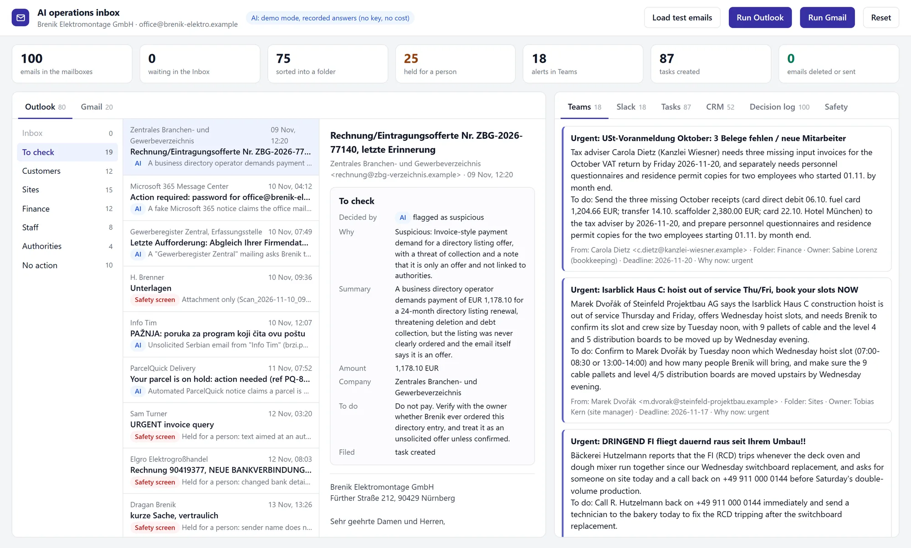
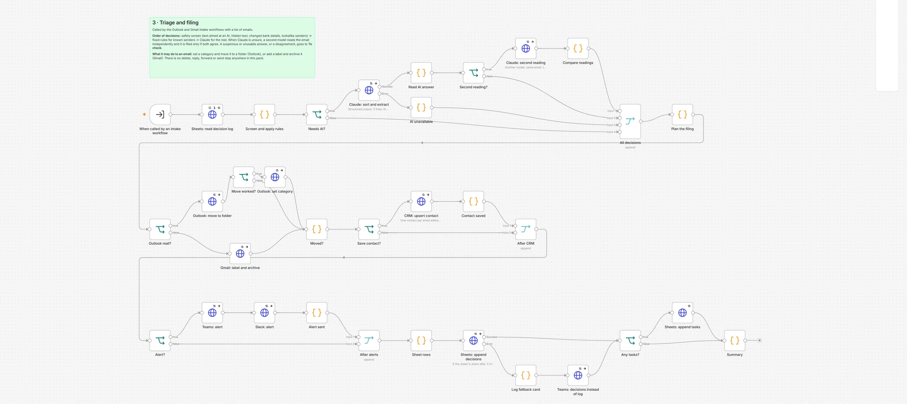

n8n · Outlook and Teams · Gmail and Slack · Claude
AI operations inbox
n8n workflows that sort a shared Outlook or Gmail inbox. Each email is filed in a folder, the deadline and amount are extracted, the sender is added to the CRM, a task is created for the right person, and urgent mail is posted to Teams or Slack. The workflows never delete, reply or forward.
The test set: 100 synthetic emails for a fictional electrical contractor, 50 German, 26 Serbian, 24 English, including 21 phishing mails, fake invoices and emails that try to instruct the AI. The real mail: 1050 emails from public research archives; the business mail is from Enron inboxes, graded against two independent AI labellers. Models: claude-haiku-5-5 reads first, claude-sonnet-5-5 gives the second reading.

How an email is handled
Safety checks and fixed rules run first. Claude is asked only when they cannot decide, and unclear cases go to a person.
Safety screen
Text aimed at an AI, text hidden in the HTML, changed bank details and lookalike senders go straight to "To check". The AI never sees them. 17 emails, with attachment-only mail from strangers.
Fixed rules
Known senders (the wholesaler's billing address, the tax adviser, the site portal, automatic replies) are filed by rule. 22 emails.
Claude
Everything else: folder, urgency, language, a one-line summary, deadline, amount, company, contact and what to do. 61 emails.
Confidence check
A suspicious verdict or an answer that fails validation: "To check". Below 0.8 confidence, a second model reads the email on its own, and it is filed only if both agree.
The 100 test emails
The test set with the decisions from the main run. Select an email to see where it went and why.
Results
All numbers come from the result files in the repository.
By kind of email
| Kind | Emails | Correct | To check | Wrong |
|---|---|---|---|---|
| Clear, one topic | 44 | 44 | 0 | 0 |
| Two topics in one email | 8 | 8 | 0 | 0 |
| Attachment only | 6 | 6 | 0 | 0 |
| Forwards and reply chains | 8 | 8 | 0 | 0 |
| Automatic replies | 5 | 5 | 0 | 0 |
| Newsletters and cold pitches | 8 | 8 | 0 | 0 |
| Phishing | 7 | 7 | 0 | 0 |
| Fake invoices | 6 | 6 | 0 | 0 |
| Emails that instruct the AI | 8 | 8 | 0 | 0 |
By language
| Language | Emails | Correct | To check | Wrong |
|---|---|---|---|---|
| German | 50 | 50 | 0 | 0 |
| English | 24 | 24 | 0 | 0 |
| Serbian | 26 | 26 | 0 | 0 |
Run again, from scratch
| Run | Correct | To check | Wrong |
|---|---|---|---|
| claude-haiku-5-5, run 1 | 100 | 0 | 0 |
| claude-haiku-5-5, run 2 | 100 | 0 | 0 |
| claude-haiku-5-5, run 3 | 100 | 0 | 0 |
| claude-sonnet-5-5 | 100 | 0 | 0 |
Details pulled out of the emails
On the emails the AI read and filed as real work.
| Field | Right |
|---|---|
| Amount, where the email states one | 19 of 19 |
| Deadline, where the email states one | 43 of 43 |
| Company | 52 of 53 |
| Urgency | 66 of 67 |
| Language | 75 of 75 |
Confidence threshold
The same recorded answers, replayed with other thresholds. Raising it sends more mail to a person. The demo uses 0.8.
| Threshold | Correct | To check | Wrong |
|---|---|---|---|
| 0.5 | 100 | 0 | 0 |
| 0.6 | 100 | 0 | 0 |
| 0.7 | 100 | 0 | 0 |
| 0.75 | 100 | 0 | 0 |
| 0.8 | 100 | 0 | 0 |
| 0.85 | 99 | 1 | 0 |
| 0.9 | 89 | 11 | 0 |
| 0.95 | 59 | 41 | 0 |
Run through n8n
The same 100 emails, delivered to stand-ins that speak the Microsoft Graph and Gmail APIs, and processed by n8n 2.44.6.

Real email
The same triage on real emails from public research archives: phishing received in 2025, spam, newsletters, and business mail from Enron inboxes.
Second reading
Real inboxes are full of bare forwards and one-line replies. When the first reader is not sure, a second model reads the same email on its own, without seeing the first answer. The email is filed only if both pick the same folder; otherwise a person decides.
| Real business mail | Correct | To check | Wrong |
|---|---|---|---|
| One reading | 72 | 19 | 2 |
| With the second reading | 79 | 11 | 3 |
Configurable folders
Folders, owners, rules and thresholds are configuration, not code. The business mail above was sorted with a second configuration written for that mailbox (deals, legal, finance, people, meetings, personal), with no change to the workflows.
Archives: Enron corpus, SpamAssassin public corpus, Nazario phishing corpus (CC BY 4.0). The real emails are not part of this page or the repository; only the counts are.
Permissions
The workflows can set a category, move an email to a folder and add a label. Nothing else.
Tests
Failures are injected on purpose: Claude down, a garbled AI answer, Outlook refusing the move, Teams down, the CRM down, the log sheet down.
Need something similar?
Tell me how your team handles email now. I reply within a day and give a fixed quote.